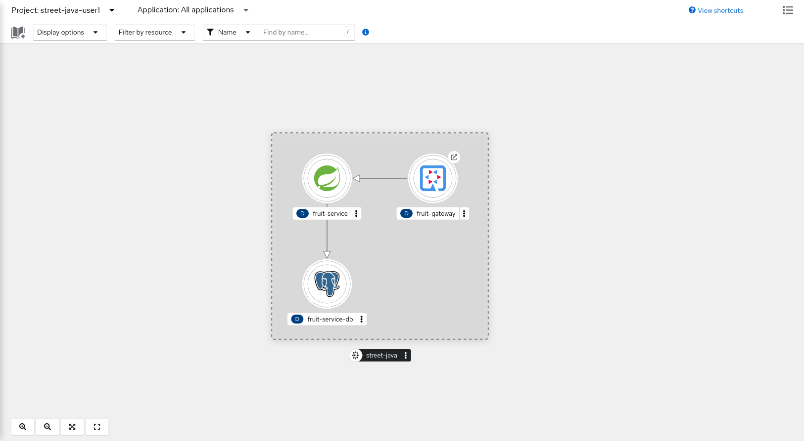

Deploy The App
Everything we do in this section requires that you have fulfilled the prerequisites section and you’re logged in your OpenShift cluster.
So if not already logged in, please do it now.
oc login -u %USERNAME% -p %PASSWORD% --server=https://api.%BASE_SUBDOMAIN%:6443Check heml cli works properly
As you already know deploying applications in kubernetes can be done in many ways… we have decided to choose helm but before we actually use it to deploy Street Java let’s be sure the binary is in the PATH and the version is the one required… Please run this command:
helm versionExpect something like this:
version.BuildInfo{Version:"v3.6.2+5.el8", GitCommit:"eb607dd4f123eaedab662cef21008d177f2c3426", GitTreeState:"clean", GoVersion:"go1.15.13"}Installing Street Java
Ok, we’re ready to deploy our application. As part of the lab prepararion we have created a project for you: street-java-%USERNAME%. Run this command to be sure this project is the default one.
oc project street-java-%USERNAME%Now let’s install our helm chart:
helm install street-java helm/street-javaThis is the expected result:
NAME: street-java
LAST DEPLOYED: Thu Feb 16 19:19:35 2023
NAMESPACE: street-java
STATUS: deployed
REVISION: 1Awesome, you did it, but just to be sure open the next link to check if the app works properly.
https://console-openshift-console.apps.%BASE_SUBDOMAIN%/topology/ns/street-java-%USERNAME%?view=graphWell aparently something is not ok… you should see something like this, and that’s not a good sign.

In fact if you run the following command you’ll see that no pods have been created!
oc get deploy -n street-java-%USERNAME%You’ll get:
0/1 in READY means 0 of 1 containers are ready… and we don’t want that!
|
NAME READY UP-TO-DATE AVAILABLE AGE
fruit-gateway 0/1 0 0 11m
fruit-service 0/1 0 0 11m
fruit-service-db 0/1 0 0 11m